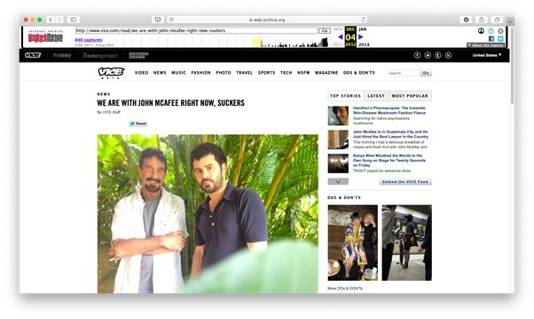
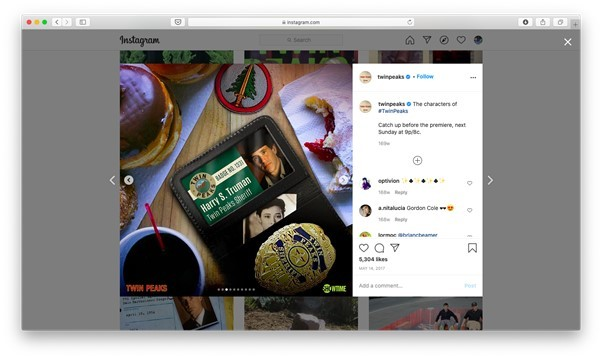
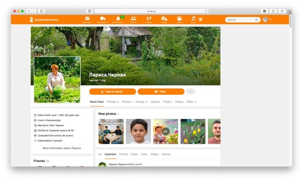
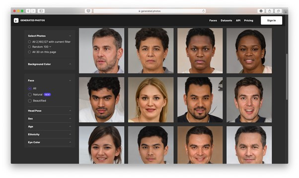

Операційна безпека: як позбутися цифрових слідів в інтернеті?
OPSEC (Операційна безпека) — термін, введений спецслужбами США для позначення аналітичного процесу недопуску супротивника до інформації, що ставить під загрозу таємність та безпеку місії.
Приватний сектор економіки також використовує OPSEC як захисний механізм проти збирання конфіденційної інформації конкурентами та зловмисниками.
У статті поговоримо про базові заходи для захисту приватних даних:
Ідентифікація чутливих даних
Перший крок — ідентифікація чутливої інформації: як і де зберігається. Поставте себе на місце конкурента чи зловмисника і, використовуючи методи OSINT, пошукайте інформацію про себе чи свою компанію.
Типи приватних даних людини:
- ПІБ;
- дата народження;
- e-mail;
- особистий та корпоративний номери телефонів;
- адреса;
- профілі у соцмережах;
- паролі.
Типи приватних даних компанії:
- інтелектуальна власність;
- бізнес-дослідження;
- фінансова інформація;
- інформація про співробітників (родина, звички, спосіб життя; клімат у колективі);
- інформація про клієнтів;
- паролі доступу до ресурсів;
- IP, MAC-адреси робочих станцій.
Пошукові системи
Почніть перевірку згадок про особу або компанію в мережі з пошуку в Google, Bing, Yahoo або DuckDuckGo. Використовуйте оператори розширеного пошуку для розширеного пошуку за ключовими словами:
- inurl:username – шукає всі сторінки з ім'ям користувача URL;
- [your name] intext:[особиста інформація, наприклад номер телефону, ID-карти або адреса] – сторінки, в тексті яких міститься особиста інформація про людину;
- site:docs.google.com “companyname” – це документи Google Docs, які знаходяться у відкритому доступі, в яких вказано ім'я компанії;
- "companyname.com" – ресурси, які посилаються на сторінку компанії, наприклад, сайти з відгуками про роботодавців, сайти пошуку роботи та медіа-портали;
- password filetype:docx site:companyname.com – файли .docx на сайті компанії, що містять слово "password". В окремих випадках через недбалість адміністратора подібний набір операторів знайде файл з паролями користувачів.
Пошук зображень
Сервіси зворотного пошуку зображень використовують систему розпізнавання облич та визначають, на яких сайтах розміщені фотографії того, хто шукає:
Пошук email-акаунтів та паролів у базах витоку
При зломі онлайн-сервісів дані користувачів потрапляють до баз витоків. Зловмисники використовують бази, щоб зрозуміти логіку створення паролів; з'ясувати, чи не повторюються.
Мета – вкрасти особистість або отримати несанкціонований доступ до комп'ютерних систем та онлайн-сервісів. Для перевірки акаунтів та паролів у базах витоку використовуються послуги:

Аналіз вразливостей та оцінка ризиків
Складіть таблицю або схему з відомими акаунтами, юзернеймами та іменами. Вкажіть телефони та адреси електронної пошти, вказані під час реєстрації або як контактні дані.
Визначте слабкі місця, які використовуються для отримання доступу до приватних даних та оцініть рівень ризику, пов'язаний з кожною вразливістю. Чинники для оцінки рівня ризику:
- ймовірність виникнення атаки;
- ступінь шкоди;
- обсяг робіт та час, який потрібно для відновлення.
Чим вірогідніша і небезпечніша атака, тим більший пріоритет усунення відповідної вразливості. У межах аналізу визначається, яку інформацію залишити публічною, а яку краще приховати чи видалити. Не забувайте, що один раз введена пошта або мобільний телефон у розділі контактів скомпрометовані назавжди.
Застосування заходів
Залежно від ступеня ризику, методи захисту даних включають створення складних паролів або passphrase, приховування геолокації, заповнення акаунта хибними відомостями та вигаданими історіями або повне видалення даних.
Проте контроль – це ілюзія. Все що потрапило до Інтернету, залишається там назавжди. Навіть якщо дотримуватися головного правила безпеки, мовчання, результат не гарантований. Нижченаведені правила захистять від базового збору інформації, проте якщо вами зацікавляться всерйоз – знайдуть усі.
Базові правила операційної безпеки:
- Розділяйте облікові записи. Вигадуйте випадкові імена e-mail-акаунтів для особистого використання. Створюйте окремі акаунти для фінансових операцій, реєстрації в соцмережах та загального призначення.
- Не повторюйте паролі. Використовуйте менеджер паролів, щоб генерувати окремі паролі для кожного онлайн-сервісу. Для додаткового захисту налаштуйте двофакторну аутентифікацію.
- Видаляйте метадані, приховуйте геолокацію. У 2012 році програміста і бізнесмена Джона Макафі оголошено в розшук за підозрою у вбивстві. Переховуючись від поліції Беліза, Макафі вів блог про втечу разом із журналістом видання Vice Magazine Рокко Касторо. Місцезнаходження Макафі у Гватемалі розкрило фото у пості: знято на iPhone та містило метадані EXIF, включаючи геолокацію.

Метадані EXIF включають модель камери, дату та час зйомки та географічні координати. Перед публікацією вмісту видаляйте метадані для захисту приватності. Ще краще – відключіть геолокацію та використовуйте VPN у знеособлених браузерах типу Tor.
- Приховуйте підказки. Любите постити селфі у Instagram чи фотозвіти про корпоративні заходи у Facebook? Соцмережі подбали про конфіденційність та автоматично видаляють EXIF перед публікацією. Проте залишаються підказки на фото: силуети будівель, рекламні вивіски, відображення у дзеркалі, тип розетки, документи на робочому столі. Такі деталі полегшують ідентифікацію особи, пошук розташування офісу або домашньої адреси, а також становлять уявлення про спосіб життя шуканої цілі.

- Навчіться мовчати. Розміщення вмісту в мережі — загроза конфіденційності. Соціальні мережі живляться емоціями, спонукаючи ділитися враженнями. Перш ніж публікувати коментарі чи фото, подумайте: чи дає це зловмиснику інформацію для створення досьє на людину чи компанію. Також навчіть мам не публікувати фотографії в Facebook або у випадку з рф у «Одноклассниках», щоб роботодавець або партнер не знайшов подробиць сімейних зборів, дитячих хвороб і подорожей.

Руські мами вельми привітно зливають в «Однокласниках» фотографії своїх діточок після сімейних заходів.
Заповнення акаунта хибними відомостями
Бажаєте захистити інформацію – переконайтеся, що цифровий слід не містить підказок. Спотворення даних заплутає супротивника і не дозволить побудувати зв'язки між обліковими записами. Так буде досягнуто три мети одночасно: збережено привітний і заслуговуючий на довіру образ, завуальовані цілі і відправлені за помилковим слідом конкуренти.
- Не використовуйте дату народження, вводьте її випадково під час реєстрації облікових записів.
- Не вводьте повне ім'я або використовуйте імена для кожного облікового запису.
- Для непублічних облікових записів використовуйте випадкові зображення профілю. Наприклад, портрети, що згенеровані AI. Переконайтеся, що фото є унікальними для кожного сайту, щоб запобігти знаходженню зв'язків між ними за допомогою зворотного пошуку зображень.

- Створюйте файли-пастки, що містять фейкові облікові дані або фінансову звітність. Використовуйте сервіс Canary Tokens щоб отримувати повідомлення при відкритті файлів та відстежити IP-адресу DNS-сервера зловмисника. Сервіс IP Logger генерує посилання для розміщення всередині файлів пасток або дискредитованих каналів зв'язку, щоб відстежити IP-адресу та локацію хакера.
Видалення даних
Видалити себе з інтернету неможливо. Відкриті державні реєстри містять інформацію про транспортні засоби, нерухомість, судові справи – ці дані неможливо видалити. Веб-архіви зберігають історичні фотографії сайтів. Реально видалити акаунти, що не використовуються, виключити себе з баз даних інформаційних брокерів, відправити запит на видалення публікацій у соцмережах та на інших сайтах:
- Видалення облікових записів, що не використовуються. Перейдіть до каталогу прямих посилань для видалення облікових записів, що не використовуються.
Пам'ятайте, що краще видалити обліковий запис, ніж заблокувати або деактивувати. При деактивації обліковий запис технічно залишається онлайн і доступний для пошуку.
- Виняток із баз даних інформаційних брокерів. Сайти пошуку людей, або «брокери даних» (Pipl, Acxiom, WhitePages), збирають та продають персональну інформацію з відкритих реєстрів та соцмереж. Щоб виключити профайл із баз даних, надішліть запит на електронну пошту власників або адміністраторів.
Якщо на сайті немає контактів, зверніться до каталогу WHOIS та дізнайтесь контакти власника. У ряді сервісів видалення профайлу доступне за допомогою онлайн-форми. Список посилань та інструкцій – у статті Vice.
- Видалення публікацій у результатах пошуку, соцмережах та на інших сайтах. Якщо хочете, щоб у результатах пошуку більше не з'являлися персональні дані, зв'яжіться з власником сайту, на якому вони опубліковані. Після того, як інформація видаляється, Google не зможе знаходити і додавати результати пошуку. Якщо власник сайту відмовиться виконати прохання, Google заблокує деякі типи особистих даних. Такі запити залишаються публічними: якщо видалили статтю, що компрометує, звернувшись до Google, то запит на видалення, як і сама стаття, з'являться в Lumen Database.
Така сама схема діє в соцмережах: попросіть людину видалити публікацію або зняти відмітку на фото. Якщо відмовляється, повідомте про порушення адміністрації та відключіть можливість відзначати на фото в налаштуваннях.